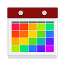

Apps
↓ Apps ↓ Experiments/POCs ↓ Tiny Bits ↓ OldSome of these are serious apps for serious work, some are proofs of concepts, and some exist just for fun. All exist because one day I decided there was a thing that needed doing and since I could not find one, I would make an app to do that thing.
Most of these are provided completely free of charge, regardless of development time or hosting costs, so if one of them has been useful for you, please consider supporting my work.

Experiments and Proofs-Of-Concepts
Sometimes the goal is less about making a full product and more about just making an idea work.
-


EarZ
Song search for humans—look up songs by lyric or melody -
NeighborZ
NeighborZ simulates tolerance and self-segregation in communities with basic AI agents. Based on an AI project from Dr. Shane Torbert.
-
SentimentViz
A rough attempt to create a live visualization of the positive and negative sentiments in a passage using the Python NLTK and TextBlob NLP libraries.
-
ScreenTxtZ
ScreenTxtZ (read “screen texts”) is a tool for displaying a message across multiple displays and updating it in real-time. The control panel at /settings allows the user to control the font, colors, and message text. It also includes controls for generating multiple display windows to fit within the screen. Opening a browser window to /disp#n will show the nth character of the message. Display windows will update in real-time (assuming the computer stays online and there is no glitch in the App Engine Channel).
ScreenTxtZ uses the Google App Engine Channel API to update the displays live as the message is typed. Identifiers for users' active displays are stored in the App Engine datastore. When the message or another property is updated, the update gets sent to each display via its channel. Using the Channel API is much more efficient than polling and easier to implement across browsers than WebSockets (or, rather, it was at the time).
The source code is available on GitHub.
Tiny Bits
Sometimes there is an idea that absolutely does not need to exist, but you just feel like making something.
Many of these are the programming equivalent of sketches—rough visualizations of partially formed ideas, not all necessarily ready for primetime in all respects. However, if one of these is popular in your circles, and it happens to be missing something that would make it easier for you to use, reach out to me, and I will add it if I can!
-
Four-ier Transform
-
Sax-Ood-Roll
-

Birthday Quilt Generator
-
Shakespearean Insult Generator
Why use the boring, common, overused curse words of today? Generate Shakespearean-sounding insults that will be more memorable and less likely to get censored!
-
RuPaul Game
An automated version of the game where you swap RuPaul's Drag Race with other things that include the creator or a character's name (e.g., “RuPaul's Cool Game For Attractive People”).
-
Poi Move Generator
Generate random poi moves that may or may not be physically possible.
Old
Older projects I have not touched in a long time, which have not been kept up to date with new technologies. But if you like them, here they are.
All my apps are WOMM certified 😉